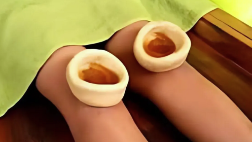

➡ No, Janu Basti is a non-invasive, soothing therapy. The warm medicated oil actually provides relief from pain and stiffness rather than causing any discomfort.
Experience the healing power of ancient Ayurveda through our curated range of therapies, each designed to restore balance, relieve pain, and rejuvenate the mind and body.
Janu Basti – Knee Rejuvenation Therapy

Janu Basti is a specialized therapy that targets knee pain and joint issues using warm, medicated herbal oil. A dough ring is placed around the knee and filled with this therapeutic oil, which penetrates deep into the tissues to reduce inflammation and strengthen joints. This classical Panchakarma therapy is especially beneficial for aging knees and sports-related injuries.
Benefits
Reduces inflammation and stiffness
Improves joint mobility
Nourishes cartilage and ligaments
➡ For chronic conditions like arthritis, 5 to 7 sessions are typically recommended for lasting results. However, relief may be felt even after the first few sessions.
➡Yes, it can be applied to one or both knees in a single session, depending on your specific condition and treatment plan.